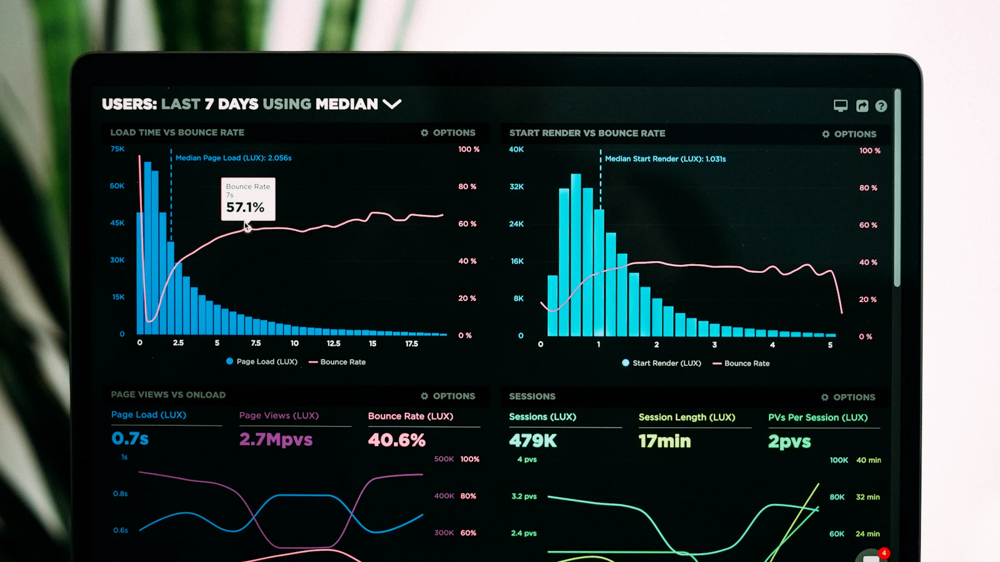

96%
portrait_042.webp人物 · 黑发 · 耳环
96%
portrait_042.webp人物 · 黑发 · 耳环
图文组合 · 128 张 · 全部图库红色服装的人像照片
红色服装的人像照片
语义⌄
搜索设置 · 全部图库 · 128 个结果全选当前页
96%
portrait_042.webp人物 · 黑发 · 耳环

91% dashboard_007.webp屏幕 · 图表 · 深色
84%
portrait_108.webp面部特写 · 粉色
‹ 上一页1 / 9下一页 ›
任务历史跨重启保留，失败项可单独查看
24 条任务图库状态进度
增量索引index_incremental · 10:42人物摄影运行中68%
智能标注auto_tag · 09:18角色收藏已完成1,248 / 1,248
同步图库sync · 昨天全部图库已完成无变化
文件夹名称标签folder_name_tags · 昨天人物摄影需注意跳过 3 项
最近操作凭据与路径已脱敏
实时增量索引已处理 3,412 张图片
检测到 28 个新增文件，已进入写入队列
图库任务开始：人物摄影
智能标注完成，缓存命中 317 项
费用估算通过，任务进入后台队列
红色服装128 张图片 · 已选择 3 张
已选择 3 张；支持连续选择复制文件 导出所选 清除
图库与路径
原图、Workspace 与结果目录相互独立
人物摄影D:\Pictures\Portrait
模型与访问
配置只影响后续任务，不重算已有向量
Android 局域网访问192.168.1.18 · 已启用
迁移流程会先检查、再备份、最后验证文档数与搜索可用性。